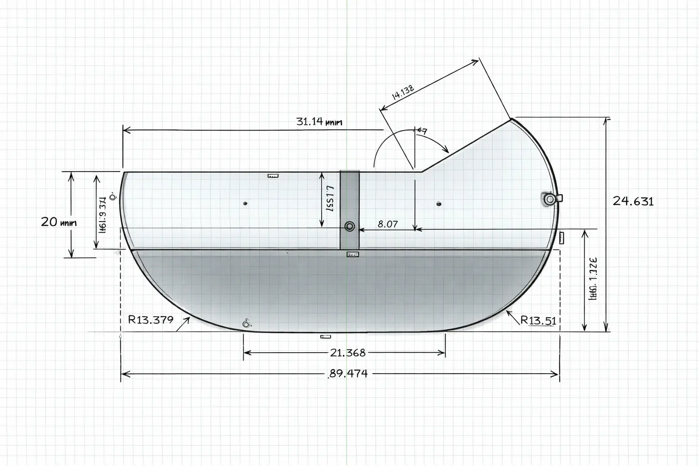

El dispositivo desde donde estás leyendo esto tiene los días contados
Sé que has escuchado esto más de mil veces desde que salieron los primeros relojes inteligentes, pero una de las pruebas de que por primera vez esto puede ser verdad es que el solo hecho de estar leyendo este artículo te requiere de un esfuerzo extra y probablemente estés buscando una forma de escucharlo mientras haces algo diferente para lo que verdaderamente necesites una pantalla. Poco a poco esas cosas en las que verdaderamente necesitas una pantalla serán menos.
Con la democratización de las inteligencias artificiales (IA) mucha gente se está preguntando si los teléfonos celulares están a punto de extinguirse como el dispositivo principal en nuestas vidas, dandole la bienvenida a los dispositivos pensados y diseñados de forma nativa para integrarse con las IA's.
Los dispositivos que estamos usando tienen más de 20 años y las computadoras mucho más. En puertas de una tecnología que va a romper las normas de internet tal y cual la conocemos, es normal pensar que aparezca algo que la trascienda.
¿Cuál es el dispositivo que reemplazará al teléfono celular?
En este sentido coincido con lo que algunos gurús de las IA's están dejando ver. No habrá un dispositivo que reemplace al smartphone. La profecía de la muerte del smartphone lleva desde que apareció el primer smartwatch por el 2014. Se hablaba que iba a reemplazar la necesidad de estar obligados constantemente a mirar la pantalla.
Los smartwatch en sus inicios comenzaron a visivilizar nuestra salud, cómo nos encontrábamos, nuestra presión arterial, oxígeno en sangre, etc. De hecho, popularizaron la ola de los fitness trakkers. Además de eso, experimentaron con las notificaciones ápticas, esas pequeñas vibraciones en la muñeca cuando llega un mensaje o nos llaman, que lograron no tener que estar mirando el teléfono constantemente y acabar distraído en una app durante horas sin saber como llegaste hasta ahí.

El smartwatch era una muy buena idea, pero no cumplió con sus promesas. Y es que la ergonomía del smartphone todavía es insuperable o lo era. El "form factor" se refiere al diseño físico y a la configuración del dispositivo. En el contexto de los smartphones es la manera como están construidos, pantallas táctiles, sin botones, micrófonos, cámara lo que los hace ideales para internet móvil, para utilizar APP's, comunicarse, escribir mensajes, etc y hemos visto la robustez de su diseño superar un montón de pruebas.
Al final, en el teléfono móvil tenemos un dispositivo que cabe en el bolsillo, con el puedes usar APP's, navegar en páginas web, hacer fotos, mandar mensajes y utilizar todo aquello que nos ofrece internet de una manera muy sencilla y eficiente.
Una familia de dispositivos
Si eres usuario de alguna inteligencia artificial, te darás cuenta de que cuando empiezas a usarla a través del teléfono es cuando encuentras sus primeras limitaciones. El smartphone a mi no me ayuda a interactuar con la IA, al contrario, me obstaculiza la experiencia. Tengo que escribir en un teclado a través de un chat en una pantalla pequeña con una superinteligencia, incluso cuando la utilizo con los auriculares con un micrófono debo asegurarme de tener un silencio adecuado y pausado, para que me entienda correctamente y no termine pidiendo cosas raras.
Entonces es normal que pensemos en el siguiente dispositivo o más bien en una familia de ellos. Así es como creo que se van a desarrollar, la nueva interfaz entre los humanos e internet en la era de la inteligencia artificial, porque internet, tal como la conoces, no va a tener nada que ver.
Los dispositivos estarán repartidos tanto por nuestro cuerpo en forma de relojes, anteojos, pulseras, ect como por los espacios en los que nos movemos, desde los autos, casas, oficinas hasta el parque en el cual vas a pasear a tus hijos. Van a tener la capacidad de entender mejor qué es lo que necesitamos en todo momento y gestionarlo todo. Estamos al borde de entrar en una era totalmente nueva en la que estos dispositivos e inteligencias artificiales tendran un contexto muy rico de nuestras vidas.
¿Cuál será la forma de interactuar del futuro?
Puede que el oído se convierta en el sentido protagónico en esta nueva era y pasemos mucho más tiempo escuchando.
Si vemos cómo ha cambiado nuestro trabajo, los chats empresareales triunfan por su rapidez, los correos ya están siendo simples formalismos, los escribimos porque no queda otra, pero cuando puedas simplemente dictar en voz alta las ideas y que un agente haga el resto, el tiempo redactando correos electrónicos se reducirá a lo que vos quieras. Hoy en día ya existen modelos que hacen resúmenes de reuniones y lo resuelven muy bien.
El futuro de la inteligencia artificial es inconcebible, simplemente porque la gente está imaginando cosas que ya existen, pero no proyectando cosas que aún no han existido jamás. Si se le hubiera preguntado a las personas del 1870 qué es lo que se tenía que fabricar, lo más probable es que digan caballos más rápidos, pero hubo alguien que salió por la tangente y comenzó a fabricar autos, Henry Ford.